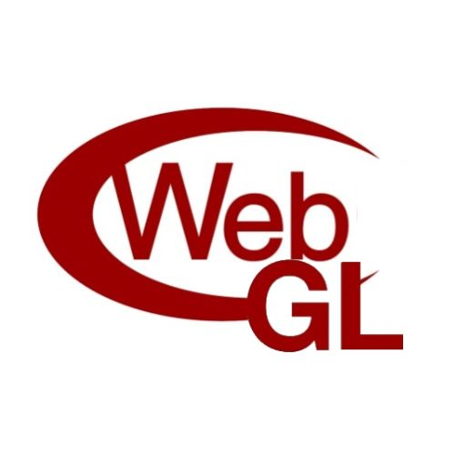

The Rolling Scopes Conference
1st February 2015, Minsk
Сардэчна запрашаем! *
The Rolling Scopes : Minsk front-end/JavaScript developer community.
We had a great time together at numerous meetups and workshops. Now we are going bigger with a
conference
featuring amazing speakers, great talks and awesomeness of all kinds.
We'll do our best organizing this event so don't even think about missing it!
This conference is made by developers who don't seek any profit for developers looking for some fun.
Let’s Roll!
*Welcome! (Belarusian)
Speakers
-

Dr. Axel Rauschmayer
Dr. Axel Rauschmayer specializes in JavaScript and web technologies. He blogs at 2ality.com, teaches web development for ecmanauten.de, edits JavaScript Weekly and organizes Munich’s JavaScript user group. Axel has been programming since 1985, developing web applications since 1995 and held his first talk on Ajax in 2006. In 1999, he was technical manager at a German internet startup that later expanded internationally. He has done extensive research into programming language design and has followed the state and future of JavaScript since its creation.
-

Martin Naumann
Martin is open source contributor and web evangelist by heart from Zurich with a decade experience from the trenches of software engineering in multiple fields. He works as a software engineer at Archilogic in front- and backend. He devotes his time to moving the web forward, fixing problems, building applications and systems and breaking things for fun & profit. Martin believes in the web platform and is working with bleeding edge technologies that will allow the web to prosper.
-

Juha Paananen
With his 15 years of experience he has figured out something about the dos and don'ts of software development. Right now, functional programming seems to be one of the dos, while Javascript remains one of the musts. In particular, Functional Reactive Programming (FRP) seems to be a perfect fit for tackling the problems related to keeping a complex and highly asynchronous application codebase nice and readable. Juha is the author of Bacon.js - the FRP library for Javascript. He uses it at work every day to create modern web apps for his clients.
-

Gregor Adams
Gregor is a self-taught web developer with a strong focus on CSS. He works as a front-end developer and architect at SinnerSchrader. Gregor is very active on codepen where he shows a lot of abstract CSS experiments. While he has no special focus when is comes to CSS his most impressive works are related to 3d shapes or fractals. Gregor speaks at conferences and meetups with a strong urge to teach or help other developers. He pushes his own limits every day, staying up to date with the latest specs, finding fixes for browser quirks or trying to do the impossible.
-

Call for speakers
If you are interested in speaking please submit a short synopsis to rolling.scopes@gmail.com. We will be happy to cover your travel expenses and provide you with a place to stay. If you need a visa we will help you to obtain it. Talk proposals are accepted in Russian, Belarusian and English. The call for speakers will be closed on the 1st of December.
Lightning Talks
Want to give a talk, but do not have enough material for a full talk? Have a shout-out for an open source project or tool? Want to share a community story (everyone loves stories!)? Preach the must-know fundamentals of Web, JavaScript, CSS, etc? Then lightning talks are for you! These talks are, at max, 5 minute talks done in quick succession. No need to fill the whole slot, though! We are accepting, reviewing, and selecting proposals for lightning talks in advance.
Workshops
The Saturday before the main conference will be dedicated to a series of workshops. Your ticket for the conference does not grant you admission to the workshops. Space being limited, please only register if you are sure to attend. Please, sign up for updates to receive a notification when registration will start.
Planned workshops:
-

WebGL via Martin Naumann
The web is transforming into a more interactive, more powerful platform every day.
Yet we’re rarely using its full potential – for instance by using impressive and powerful 3D visualisations to convey better visual representations.
In this workshop I will show a few case studies using WebGL for data visualisation of source code repositories, interactive models of apartments with realistic furniture, traffic visualisation.
The workshop will also talk about potential pitfalls and performance bottlenecks and how to overcome them – using Three.js as an example. -

Polimer via Yury Tatsenka
Polymer is a first of its kind library. It’s designed to leverage the emerging Web Component standards, to make web app development a breeze!
If you’re new to Web Components, or curious about the latest and greatest features that Polymer has to offer, join Yury Tatsenka for this workshop.
You’ll kick off with an overview of Polymer to get everyone up to speed, explore the growing component ecosystem, and take a look at the next generation of web apps. -

ReactJS via Viktar Khamiakou
React is a JavaScript library for building user interfaces.
Just the UI: Lots of people use React as the V in MVC. Since React makes no assumptions about the rest of your technology stack, it's easy to try it out on a small feature in an existing project. Virtual DOM: React uses a virtual DOM diff implementation for ultra-high performance. It can also render on the server using Node.js — no heavy browser DOM required. Data flow: React implements one-way reactive data flow which reduces boilerplate and is easier to reason about than traditional data binding.
Viktar teaches you how to use React in your own project. -

ES6 Harmony via Andrei Vouchanka and Alexander Gerasimov
The current version of EcmaScript supported in modern browsers is ES5 (with some ES6 support). ES5 drives a lot of developers mad. Folks coming from the backend development space find ES5 lacks some pretty basic language features. As such, several workarounds have emerged. TypeScript is very popular in the .NET world (and here at Wintellect) and CoffeeScript is kind of a big deal™ in the Ruby community. Both TypeScript and CoffeeScript provide syntactic sugar on top of ES5 and then are transcompiled into ES5 compliant JavaScript. ES6 will tackle many of the core language shortcomings addressed in TypeScript and CoffeeScript.
There are quite a few new features in ES6, many still in draft form. In this workshop We’ll cover classes, Arrow Functions, Modules, Block Scoping, and Promises.
Venue
Minsk is the capital and the largest city in Belarus with population over 2 million. Minsk hosted IIHF Ice Hockey World Championship in 2014
Exact location is yet TBA.
Afterparty
Will be!